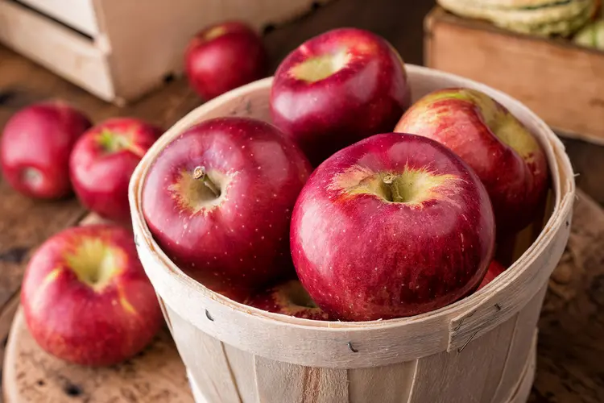
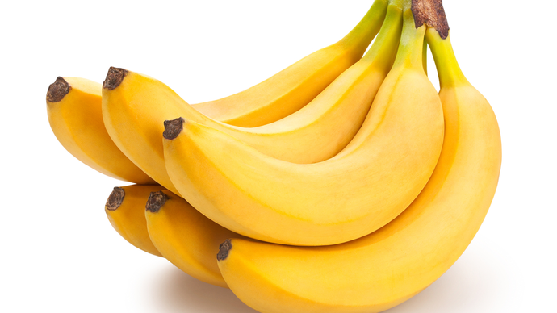
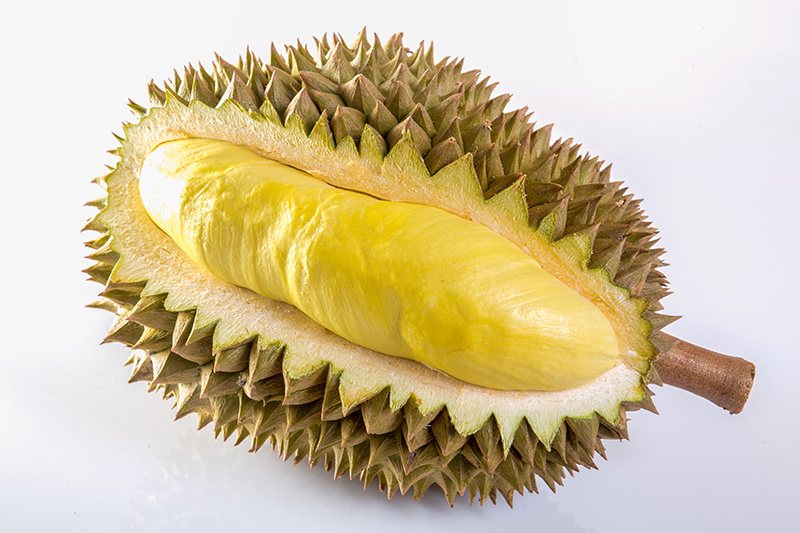
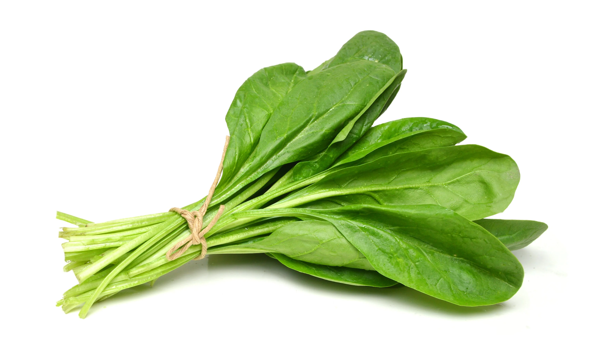
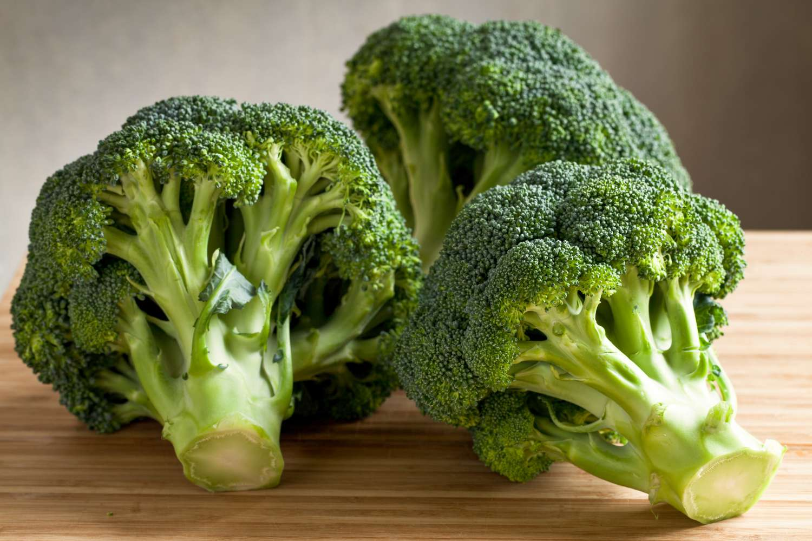
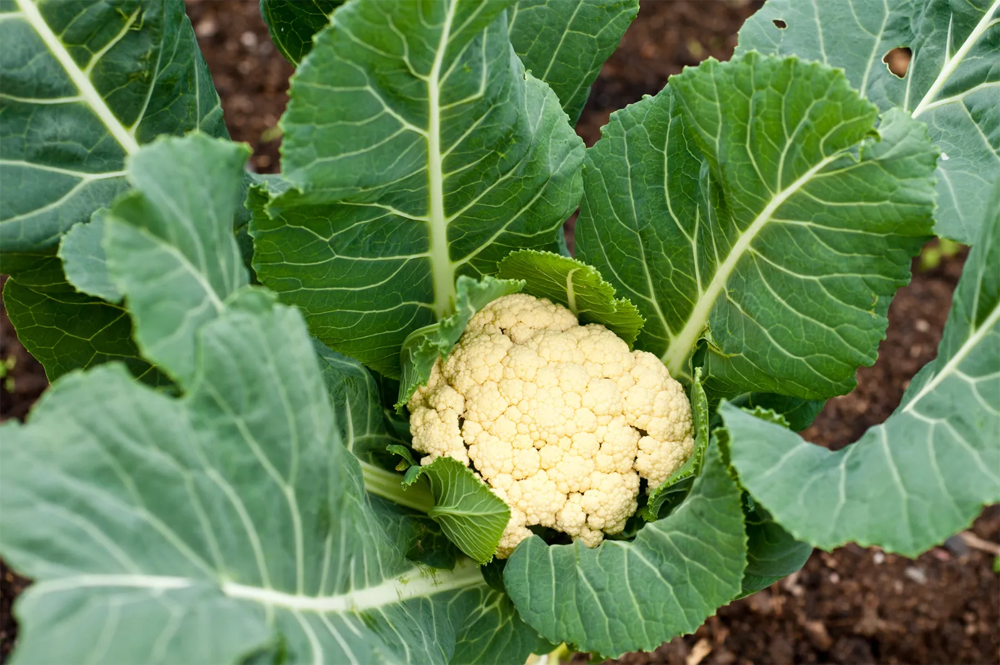
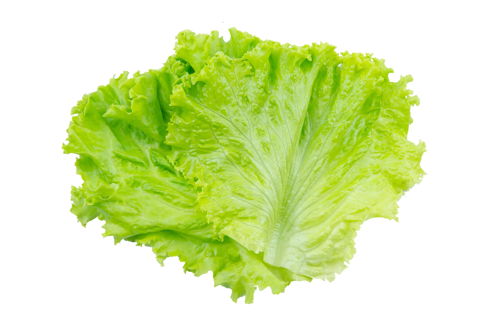

What are fruits?
Fruits are the edible parts of plants that usually contain seeds and develop from flowers. They are sweet or tangy and come in many shapes, colors, and flavors. Eating fruits gives the body vitamins, minerals, fiber, and natural sugars that provide energy and help maintain good health.

Apples
Apple is a sweet, crisp fruit that grows on trees in many parts of the world. It comes in colors like red, green and is packed with vitamins, fiber, and antioxidants that help keep the body healthy.

Bananas
Banana is a soft, elongated fruit with a yellow peel and sweet taste. It grows in clusters on large plants and provides potassium, vitamins, and quick energy, making it a popular snack.

Grapes
Grapes are small, round fruits that grow in clusters on vines. They come in colors like green, red, and purple, and are full of natural sugars, fiber, and beneficial compounds that promote good health.

Durian
Durian is a large tropical fruit known for its spiky shell and strong smell. Inside, it has creamy, rich flesh that is high in calories, vitamins, minerals and healthy fats, also know as the “king of fruits.”
Vitamins and Minerals in Fruits
| Type of Fruits |
Vitamins |
Minerals |
| Apple |
Vitamin A, Vitamin C, Vitamin K |
Calcium, Potassium, Magnesium |
| Banana |
Vitamin C, Vitamin B6 |
Potassium, Magnesium, Manganese |
| Grape |
Vitamin C, Vitamin K, Vitamin B6 |
Potassium, Copper, Manganese |
| Durian |
Vitamin C, Vitamin B6, Vitamin B1 |
Potassium, Magnesium, Copper, Iron |
What are vegetables?
Vegetables are edible plant parts like roots, stems, leaves, flowers, or seeds. They provide important nutrients such as vitamins, minerals, and fiber. Eating vegetables keeps us healthy, gives energy, and helps protect against many diseases.

Spinach
Spinach is a healthy leafy green vegetable with soft, dark green leaves. It is packed with iron, vitamins, and powerful antioxidants. Spinach can be eaten raw in salads or cooked in various dishes for health benefits.

Broccoli
Broccoli is a green vegetable from the Brassica family. It has a thick stalk with clustered green florets that look like tiny trees. Broccoli is highly nutritious, providing vitamins, minerals, and fiber that help keep the body healthy.

Cauliflower
Cauliflower is a nutritious vegetable from the Brassica family. It has a white, round head made of tightly packed florets. It is rich in vitamins, minerals, and fiber, and can be eaten raw or cooked.

Lettuce
Lettuce is a leafy green vegetable often eaten raw in salads, sandwiches, and wraps. It has soft, crisp leaves and is low in calories but contains vitamins, and fiber, making it refreshing and healthy.
Vitamins and Mineral in vegetables
| Type of vegetable |
Vitamins |
Minerals |
| Spinach |
Vitamin A, Vitamin C, Vitamin K |
Calcium, Potassium, Magnesium |
| Broccoli |
Vitamin C, Vitamin K, Vitamin A |
Iron, Potassium, Calcium |
| Cauliflower |
Vitamin C, Vitamin K, Vitamin B6 |
Potassium, Calcium, Magnesium |
| Lettuce |
Vitamin A, Vitamin K, Vitamin C |
Calcium, Potassium, Magnesium |